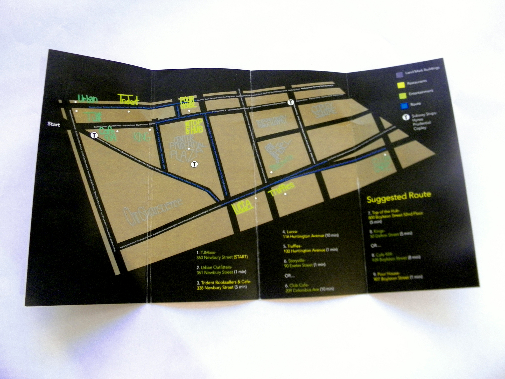

Copley Square Map
This Project is a typographic map that is created to be a young professionals guide to bars, and shopping in copley square. A set path to follow, brings a youn g professional on a journey around copley square that suits to their interests for a fun friday night out.